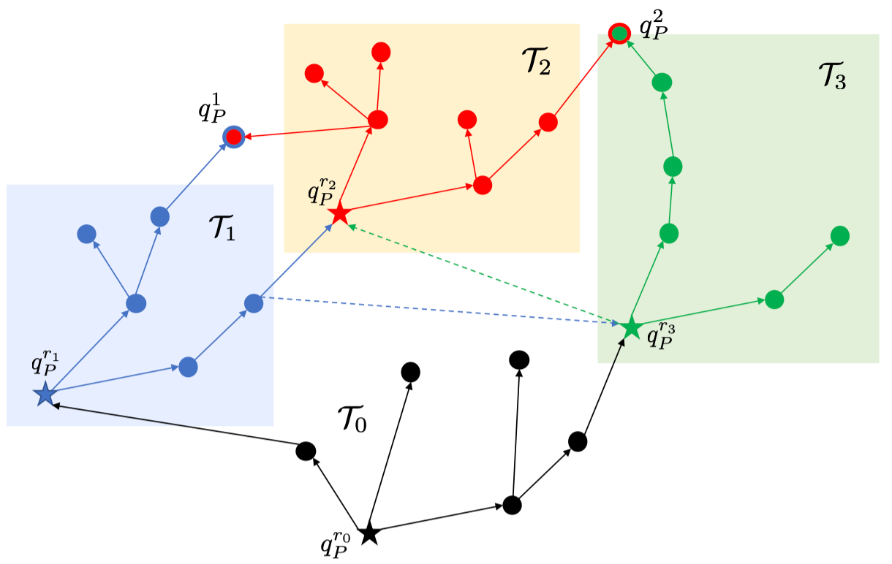

|
Xusheng Luo I'm currently a Posdoctoral Fellow at Intelligent Control Lab of Carnegie Mellon University, working with Dr. Changliu Liu, starting from 2023. I received the Ph.D. degree in Mechanical Engineering and Materials Science from Duke University in December 2020, under the supervision of Dr. Michael M. Zavlanos. Prior to it, I received the B.Eng. and M.S.E. degrees in Aerospace Engineering from the Harbin Institute of Technology, China, in 2015 and 2017, respectively. |
{kind=link}
ResearchMy research interest broadly centers around robotics, mainly focusing on motion planning and control synthesis for multi-robot systems under high-level tasks specified by temporal logic formulas. The goal is to design correct-by-construction algorithms with optimality or scalability properties to tackle more complex tasks than conventional point-to-point navigation. In addition, I conducted projects related to human-robot interaction and formal verification of neural network controllers. Representative papers are highlighted. |

|
Simultaneous Task Allocation and Planning for Multi-Robots under Hierarchical Temporal Logic Specifications
Xusheng Luo, Changliu Liu arXiv , 2024 paper / code By leveraging the intrinsic structure of tasks, This paper introduced a hierarchical structure to LTL specifications. we employ a search-based approach to synthesize plans for a multi-robot system, accomplishing simultaneous task allocation and planning. |

|
Decomposition-based Hierarchical Task Allocation and Planning for Multi-Robots under Hierarchical Temporal Logic Specifications
Xusheng Luo, Shaojun Xu, Ruixuan Liu, Changliu Liu IEEE Robotics and Automation Letters (RA-L) , 2024 IROS Workshop on Formal Methods Techniques in Robotics Systems: Design and Control , 2023 video / paper / code This paper address the hierarchical Linear Temporal Logic (LTL) specifications in robotic planning. By breaking down complex tasks into interrelated sub-tasks within a multi-level structure, this approach offers syntactic brevity, improved interpretability, and more efficient planning, with successful applications in robotic navigation and manipulation demonstrated through extensive simulations. |

|
Obtaining Hierarchy from Human Instructions: an LLMs-based Approach
Xusheng Luo, Shaojun Xu, Changliu Liu CoRL Workshop on Learning Effective Abstractions for Planning (LEAP) , 2023 paper This paper presents a novel approach for long-horizon robotic planning that leverages Large Language Models (LLMs) to translate human instructions into Hierarchical Linear Temporal Logic for more efficient planning. By first converting instructions into a Hierarchical Task Network-like structure and then into hierarchical LTL specifications, this method demonstrates the capability of LLMs in facilitating complex task planning in a user-friendly manner through simulated experiments. |

|
Simulation-aided Learning from Demonstration for Robotic LEGO Construction
Ruixuan Liu, Alan Chen, Xusheng Luo, Changliu Liu arXiv , 2023 paper / video This paper explores automatic rapid LEGO prototyping, addressing the challenge of creating construction plans for customized LEGO designs, To simplify this process, the paper introduces a simulation-aided learning from demonstration (SaLfD) framework, enabling robots to learn and execute LEGO assembly and disassembly tasks from human demonstrations, successfully implemented and tested on a FANUC LR-mate 200id/7L robot. |
|
Temporal Logic Task Allocation in Heterogeneous Multi-robot Systems
Xusheng Luo, Michael M Zavlanos IEEE Transactions on Robotics (T-RO), 2022 paper / extended version / code This paper addresses the challenge of allocating tasks, defined by global Linear Temporal Logic (LTL) specifications, to diverse teams of robots. To tackle this, we propose a hierarchical method that first assigns robots to tasks using a simplified NBA, then formulates a MILP for subtask allocation, and finally develops low-level executable plans, demonstrating that this approach is both efficient and effective for a wide range of tasks. |
|
|
Formal Verification of Stochastic Systems with ReLU Neural Network Controller
Shiqi Sun, Yan Zhang, Xusheng Luo, Panagiotis Vlantis, Miroslav Pajic, Michael M Zavlanos ICRA, 2022 paper This paper tackles the challenge of formal safety verification for stochastic cyber-physical systems (CPS) that use ReLU neural network controllers, aiming to identify initial states that ensure the system remains safe within a certain time frame. The approach involves abstracting discrete-time LTI systems with Gaussian noise into a graph, using a Satisfiability Modulo Convex (SMC) problem to estimate transition probabilities, and then calculating safety probability bounds. |
|
|
An abstraction-free Method for Multi-robot Temporal Logic Optimal Control Synthesis
Xusheng Luo, Yiannis Kantaros, Michael M Zavlanos IEEE Transactions on Robotics (T-RO), 2021 paper / code This article introduces a new sampling-based linear temporal logic (LTL) planning algorithm that builds trees to explore the state-space, avoiding the need for complex discrete abstractions of robot mobility. This approach, enhanced by biasing the sampling towards efficient paths, is shown to be both scalable and superior in performance to traditional graph-based LTL planning methods. |
|
|
An optimal Graph-Search Method for Secure State Estimation
Xusheng Luo, Miroslav Pajic, Michael M Zavlanos Automatica, 2021 paper This paper addresses the vulnerability of modern Cyber-Physical Systems (CPS) to malicious attacks, focusing on the need for secure state estimation. The authors propose a new optimal graph-search algorithm designed for large-scale, linear time-invariant systems, which efficiently identifies malicious attacks and accurately estimates states by methodically searching through layers of a graph and managing a node repository, outperforming existing algorithms in both optimality and speed. |
|
|
Human-in-the-loop Robot Planning with Non-contextual Bandit Feedback
Yijie Zhou, Yan Zhang, Xusheng Luo, Michael M Zavlanos CDC, 2021 paper This paper addresses the challenge of robot navigation in human-populated environments, aiming to create trajectories that are collision-free, dynamically feasible, and maximize human satisfaction by being responsive to human needs and avoiding discomfort. the authors propose a semi-supervised Bayesian Optimization method, enhanced with an autoencoder for dimensionality reduction and an exploration bias towards feasible trajectories, demonstrating its effectiveness in scenarios with unpredictable human demands. |
|
|
Socially-aware Robot Planning via Bandit Human Feedback
Xusheng Luo*, Yan Zhang*, Michael M Zavlanos ICCPS, 2020 paper This paper presents a novel framework for designing socially-aware robotic trajectories in human-populated environments, defining socially-awareness as the avoidance of human discomfort. The approach formulates this as an online optimization problem, leveraging zeroth-order optimization and motion planning to minimize human complaints, uniquely using bandit feedback without contextual information to enhance the social value of robot trajectories. |
|

|
Single-agent Indirect Herding of Multiple Targets using Metric Temporal Logic Switching
Duc Le, Xusheng Luo, Leila J. Bridgeman, Michael M Zavlanos, E. Dixon CDC, 2020 paper The paper addresses the single-agent indirect herding problem, focusing on a herder agent's task to guide a group of target agents to a specific goal. To manage this, the herder switches control among different targets, creating a switched dynamical system. The study employs Lyapunov-based methods to develop dwell-time conditions, which are then integrated into Metric Temporal Logic (MTL) specifications for a switched nonlinear Model Predictive Control (MPC) problem. |
|  |
Transfer Planning for Temporal Logic Tasks
Xusheng Luo, Michael M Zavlanos CDC, 2019 paper This paper introduces an optimal control synthesis algorithm for Linear Temporal Logic (LTL) tasks, utilizing a novel approach that leverages experience from previous similar tasks. By decomposing complex LTL tasks into simpler subtasks and storing the corresponding skills in a reusable library, the algorithm efficiently synthesizes plans for new tasks, with numerical experiments confirming its effectiveness and efficiency. |
ServiceReviewer for T-RO, T-ASE, T-CNS, L-CSS, ICRA, IROS, ACC, ICCPS, UR. |